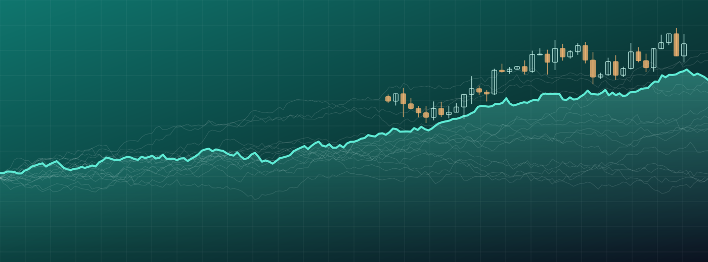
FORMACIÓN · 20 SEMANAS · BETA
Trading Algorítmico Profesional
Aprende a crear, validar y gestionar sistemas de trading algorítmico con StrategyQuant X, MetaTrader 4 y MetaTrader 5, desde cero y sin programar.
Empezar por la semana 1 →20semanas
5etapas
140lecciones
80 %para aprobar
El programa
Etapa 1 · Fundamentos
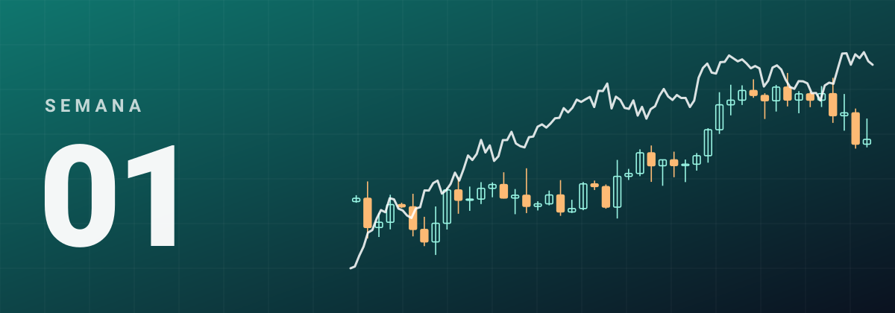
SEMANA 01Cómo funcionan los mercados SEMANA 02Cuatro mercados, órdenes y operativa
SEMANA 02Cuatro mercados, órdenes y operativa SEMANA 03Matemáticas y probabilidad
SEMANA 03Matemáticas y probabilidad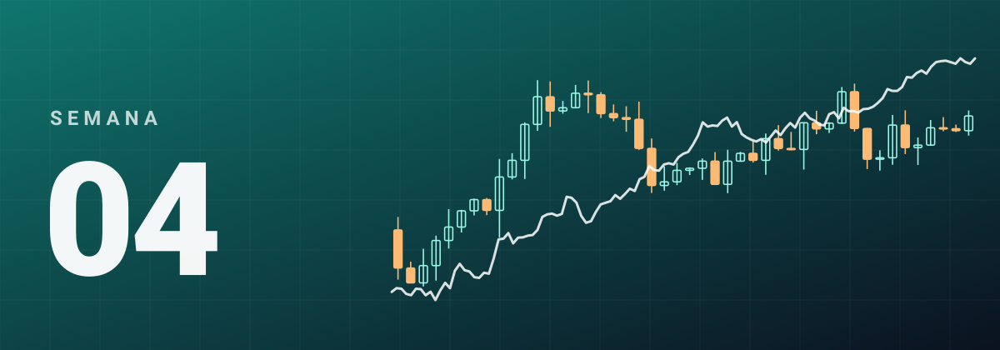
SEMANA 04Estadística y gestión del riesgoEtapa 2 · StrategyQuant X
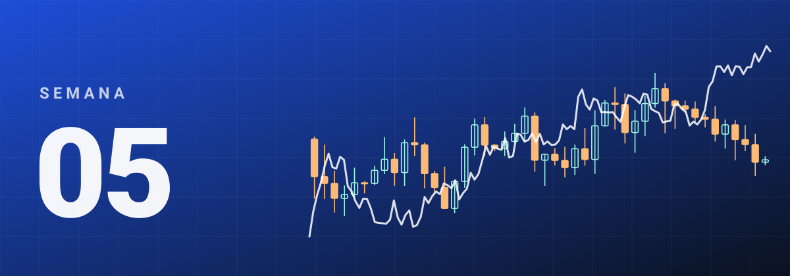
SEMANA 05Entorno y datos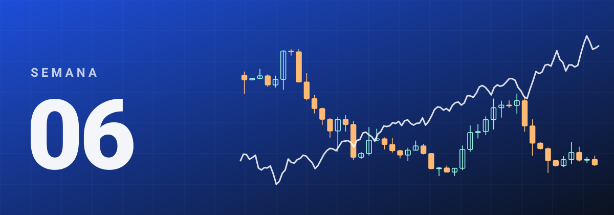
SEMANA 06Primeras estrategias SEMANA 07Tendencia, ruptura y momentum
SEMANA 07Tendencia, ruptura y momentum SEMANA 08Reversión, volatilidad e híbridas
SEMANA 08Reversión, volatilidad e híbridasEtapa 3 · Investigación y validación
 SEMANA 09Investigación y calidad de datos
SEMANA 09Investigación y calidad de datos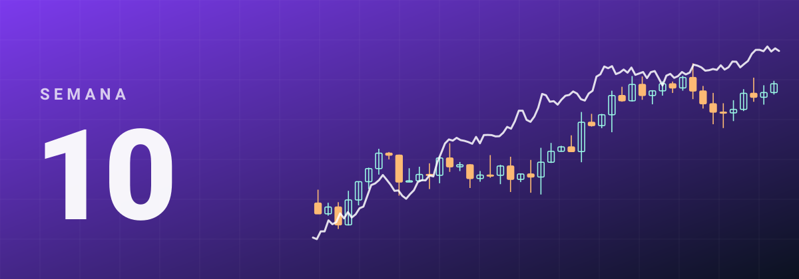
SEMANA 10Backtesting y sobreoptimización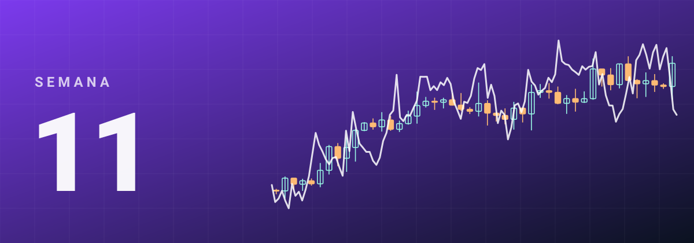
SEMANA 11Walk-Forward y Monte Carlo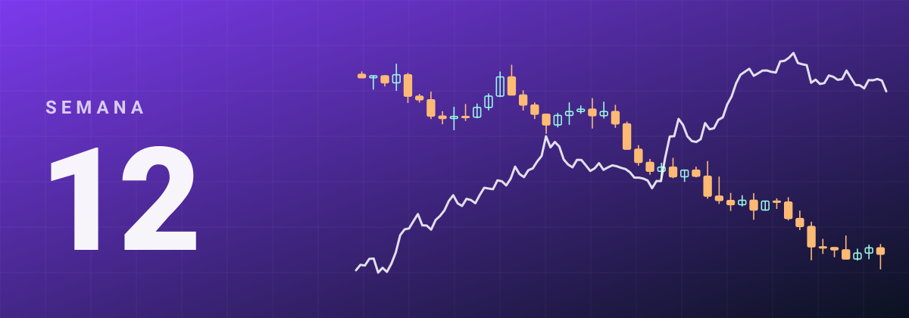
SEMANA 12Robustez y selecciónEtapa 4 · Carteras y ejecución
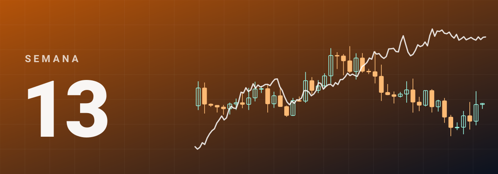
SEMANA 13Construcción de carteras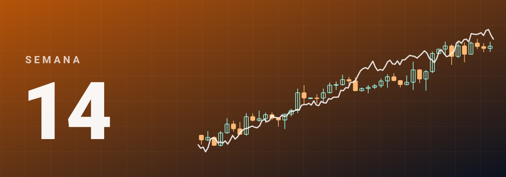
SEMANA 14Correlación e interés compuesto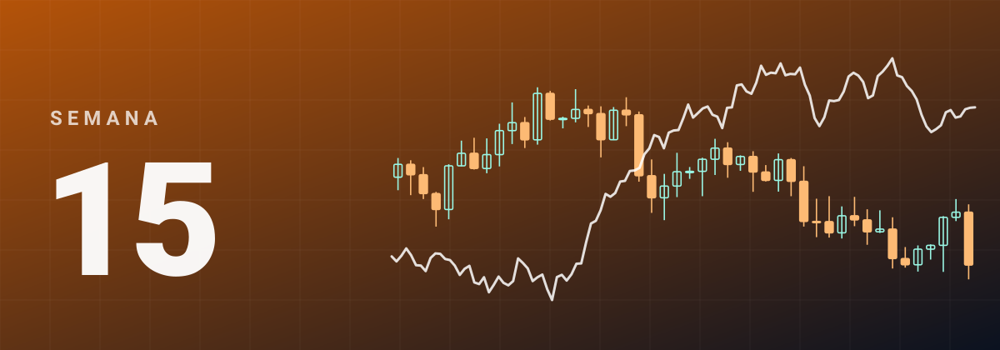
SEMANA 15MetaTrader 4 y MetaTrader 5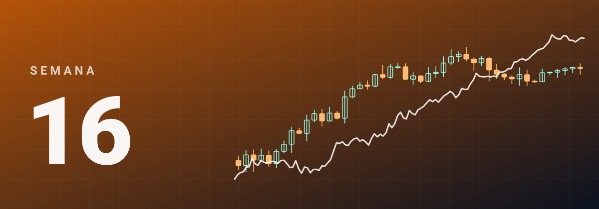
SEMANA 16Varias cuentas y ejecuciónEn producciónEtapa 5 · Profesionalización
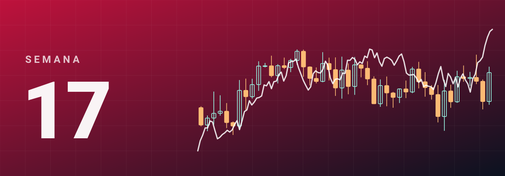
SEMANA 17Investigación especializadaEn producción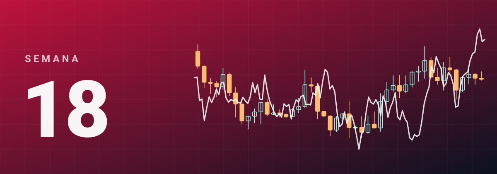
SEMANA 18Capital propio, Darwinex y fondeoEn producción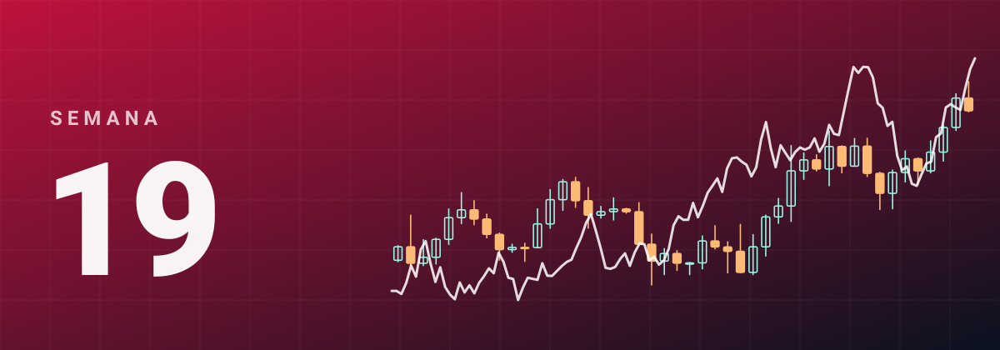
SEMANA 19Gestión financiera y fiscalidadEn producción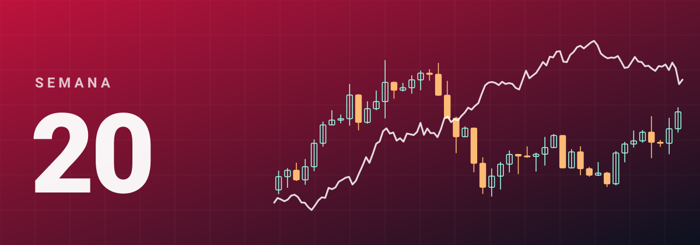
SEMANA 20Proyecto finalEn producciónCómo se estudia
1
Estudia las secciones de la semana en orden: presentación, lecciones, glosario, ejercicios, investigación y examen.
2
Escribe tus respuestas en los cuadros y marca cada sección al terminarla.
3
Apunta horas, dudas y hallazgos en Mi progreso y cuaderno.
4
Al acabar, pulsa «Copiar mi trabajo» y envíalo a corrección. Se aprueba con un 80 %.